Colombia
May 29th – June 12th, 2024
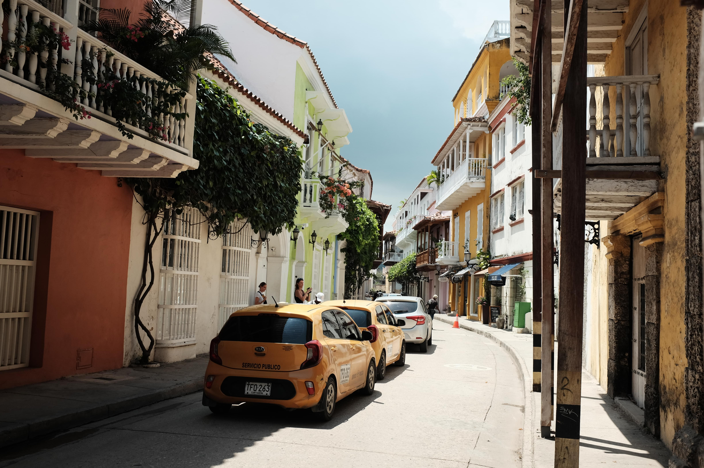
Spanish-style streets in Cartagena. I spent a week here before meeting up with Pat in Medellín.
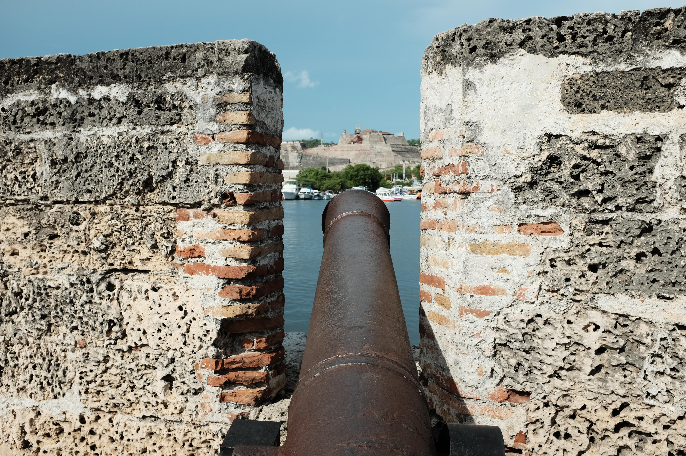
Looking down the sights at Castillo San Felipe de Barajas

The Cartagena skyline from the castillo, which was built to protect Cartagena from pirates and navies.
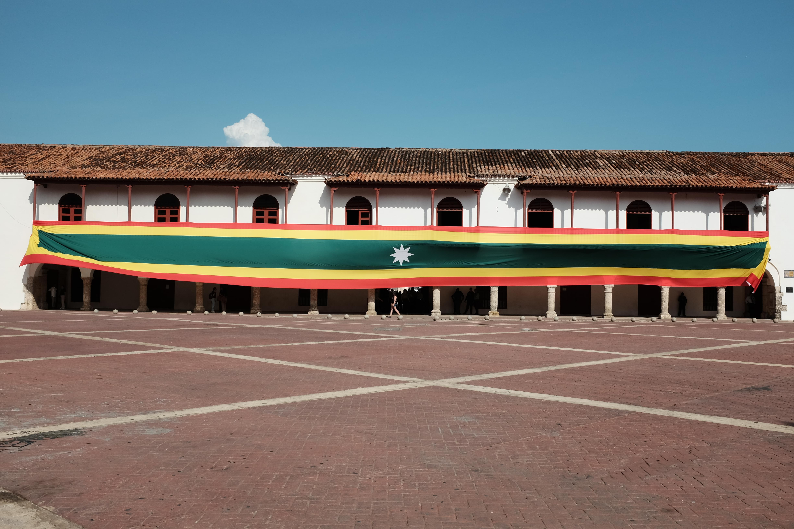
Plaza de la Aduana (customs). Cartagena was one of three official ports in the Americas designated by the Spanish Crown to receive enslaved Africans. As a result, Cartagena is home to one of the largest Afro-descendant populations in Colombia and remains a vibrant center of Afro-Colombian culture today.
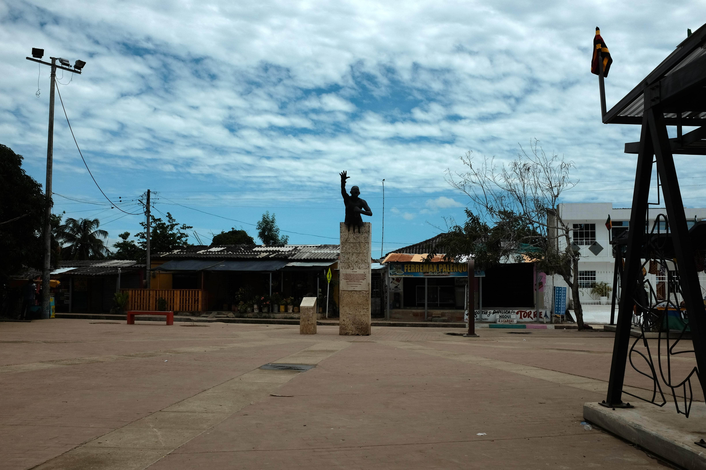
I drove about an hour outside Cartagena to visit San Basilio de Palenque, the first free African town in the Americas. The town was founded by Benkos Biohó, the enslaved king from Guinea-Bissau whose statue stands in the main square today.
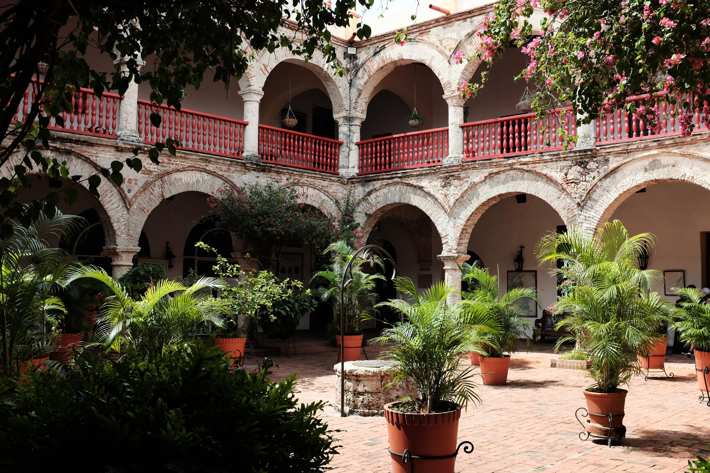
The courtyard of the Convent of Santa Cruz de la Popa
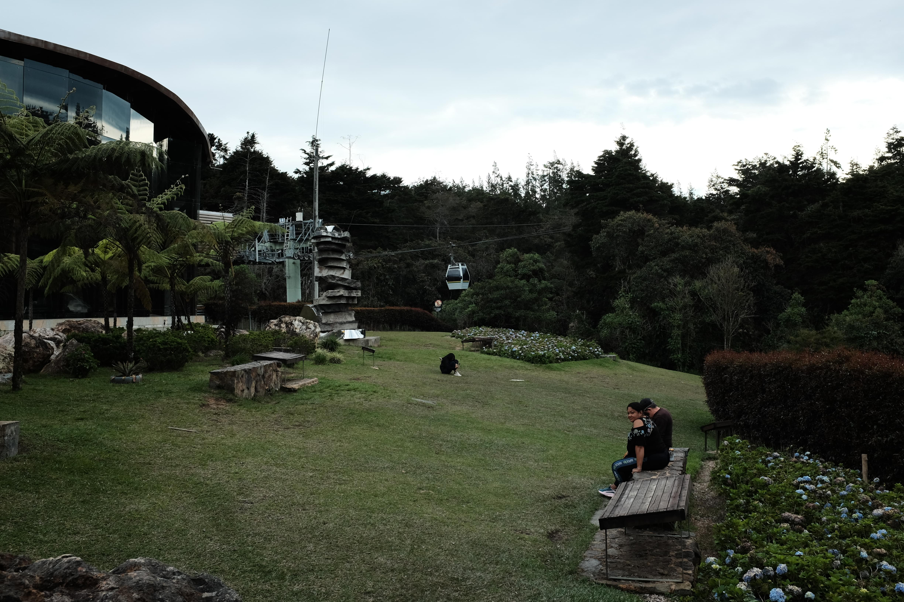
The end of the teleferico ride up to Parque Arví, Medellín.
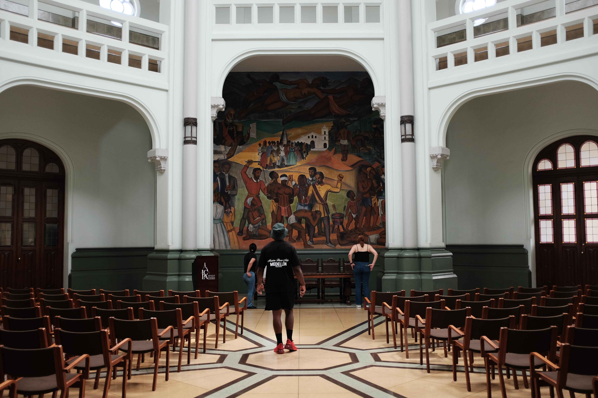
Taken in the Palacio de la Cultura Rafael Uribe Uribe
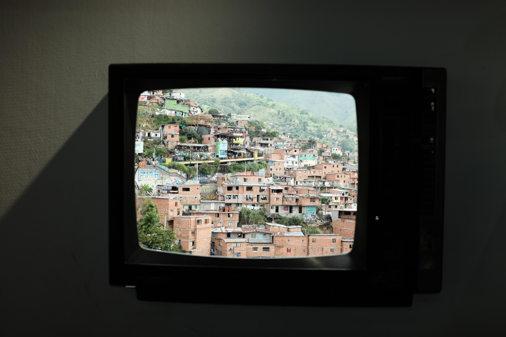
Some houses in Comuna 13, taken from a retro TV frame set into the wall of a gift shop. The neighborhood was once notorious for cartel violence but is now a popular tourist attraction for its colorful houses and street art.
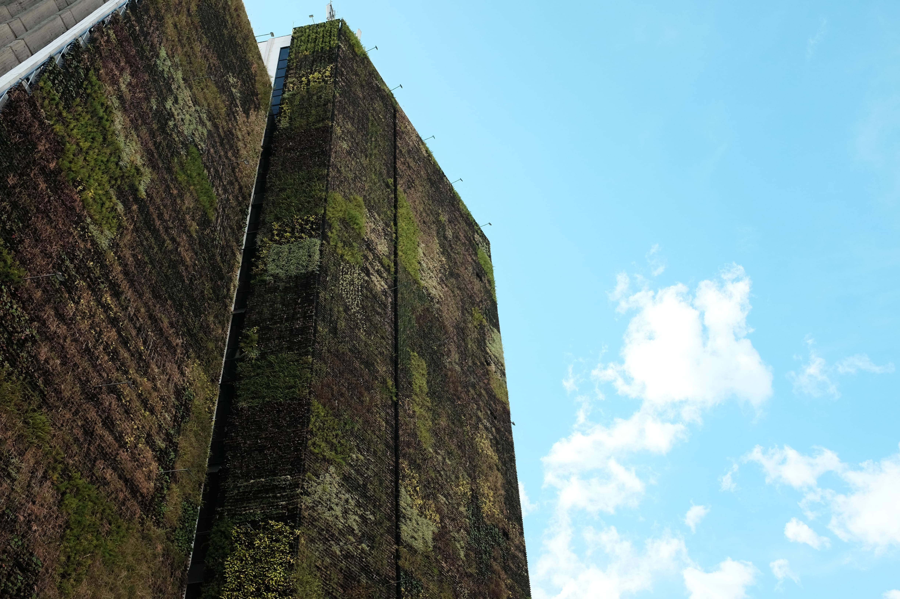
A cool building in the Centro Administrativo La Alpuajarra with a plant wall
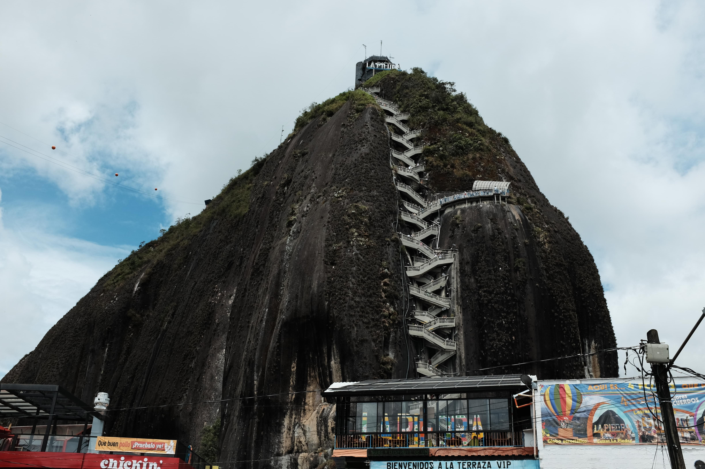
La Piedra del Peñol in Guatapé, a couple hours outside of Medellín. There are 740 steps to the top.
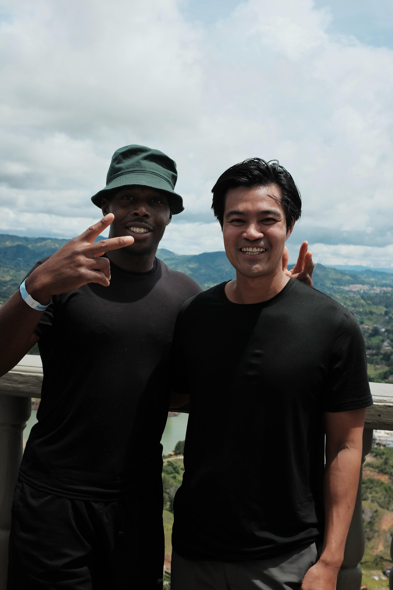
With Pat on top of La Piedra del Peñol
1/12